Как выбрать офисное кресло: 5 главных правил
Кресло нужно подбирать для конкретного человека. Основное ожидание — чтобы вы и ваша спина не уставали,
несмотря на часы или сутки, проведённые за компьютером. В KINGSTYLE мы работаем с креслами уже 10 лет.
Поэтому, исходя из опыта, советуем опираться на 5 главных факторов, чтобы выбрать хорошее кресло:
- Цель.
- Материал.
- Механизм.
- Антропометрия — ваш рост и вес.
- Дополнительные комплектующие.
-
Цель. Для чего вам нужно кресло
Вариантов много: для работы, игры, статуса, отдыха или дизайна интерьера. В последнем, конечно,
ориентируйтесь только на визуальные впечатления. В остальных случаях от назначения зависят нужные
вам характеристики. Разберёмся в видах офисных кресел, и каким потребностям они отвечают.Для дома
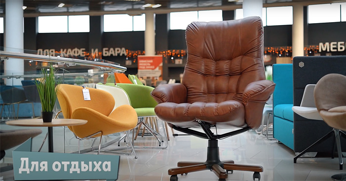Компьютерные кресла. Самая широкая категория стульев, которая делится на специализированные виды.
Они предназначены для комфортного пребывания за столом в течение нескольких часов, не вставая. Как
выбрать кресло для работы за компьютером? В зависимости от того, сколько проводите за ним времени:- для 1-2 часов в день будет достаточно регулируемой спинки модели.
- 3-5 часов требуют более широкой функциональности кресла. Ориентируйтесь на модели с
регулированием высоты, наклона спинки и глубины сиденья. - 5 часов и дольше рекомендуем проводить в креслах с ортопедической спинкой. Они сокращают
нагрузку на позвоночник и равномерно распределяют давление.
Геймерские. Позволяют не отрываться от игрового процесса часами и даже сутками. Благодаря большому
набору регулировок в игровом кресле можно даже вздремнуть. Достаточно откинуть спинку до 170° и
принять горизонтальное положение, чтобы отдохнуть. Подлокотники также регулируются по высоте,
вылету вперёд-назад и углу поворота, чтобы киберспортсменам было максимально комфортно.
Геймерские кресла отличаются мощным и стильным внешним видом, который напоминает дизайн сидений в
гоночных автомобилях. Выступающие части фиксируют спину сзади и по бокам так, чтобы играть часами
напролёт без ущерба осанке. Спинка откидывается одним нажатием благодаря рычажному механизму.
Специальный валик под поясницу поддерживает правильную форму позвоночника и снимает нагрузку с
мышц. Во многих моделях предусмотрены также подушечки под шею и голову. Их можно зафиксировать в
любом удобном положении или снять вовсе.
Как правило, игровые стулья отличаются стальной рамой и крепким каркасом, способными выдержать
нагрузки до 250 кг. Их масса больше, чем у классических компьютерных, но благодаря этому выше
прочность.
Ортопедические кресла. Качественные, высокотехнологичные и полезные для спины модели.
Разрабатываются совместно с дизайнерами и ортопедами. Корректируют осанку и равномерно распределяют
нагрузку между позвонками.
Выбирая компьютерное кресло для дома, обратите внимание на ортопедическую корсетную спинку. Она
снимает осевую нагрузку и помогает сохранить правильную осанку. Благодаря регулируемым
подголовникам снижается нагрузка на шейные позвонки, изменяется высота.
За счёт ортопедических стульев вы избавитесь от нагрузки на поясничный отдел, дискомфорта и боли в
шейном отделе, пояснице и плечах.Для работы
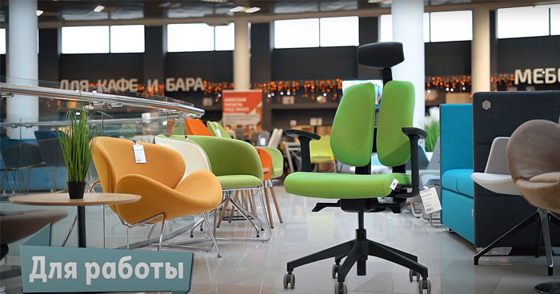Кресла для персонала. Многофункциональные офисные кресла, предназначенные для длительной работы за
компьютером — от 5 часов. Обладают поворотными механизмами и регулировками спинки, подлокотников и
сиденья.
Это эргономичные модели, которые изготовлены специально, чтобы снизить утомляемость сотрудников,
повысить их комфорт и мотивацию.
Кресла для персонала оборудованы:- Удобными роликами, которые позволяют быстро передвигаться между рабочими зонами;
- Подъемными механизмами, которые можно адаптировать под рост сотрудника;
- Спинками с поддержкой спины.
У нас представлены как бюджетные модели, благодаря которым можно недорого обустроить рабочие места для
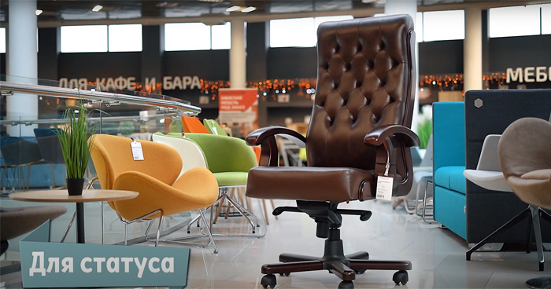
персонала, так и премиальные кресла.Кресла для руководителей. Кресла из более дорогих материалов и с более продвинутыми механизмами.
Отличаются максимальным комфортом. Выглядят статусно и долго служат.
Кресло руководителя отражает вкус владельца и формирует имидж компании. При выборе обращайте
внимание на качество, удобство и дизайн — он должен гармонично сочетаться с интерьером кабинета.
Обратите внимание на хромированные каркасы для современных интерьеров и деревянную отделку для
классической обстановки. В обивке лучше отдать предпочтение натуральной коже или сетке — это самые
долговечные материалы.
Для посетителей. Подходят для ожидания в очереди и общения с посетителями в общественных местах.
Удобные офисные кресла, но не сильно функциональные, так как не требуют длительного использования,
более 1-2 часов, одним человеком.
В ассортименте представлены классические и современные модели, в базовой и яркой палитре. Таким
образом, вы сможете оформить зону для посетителей, оптимально подходящую общему стилю офиса.
Также у нас есть коленные-стулья, кресла-седла, стулья для активного сидения, стулья-вырастайки,
барные стулья, кресла для кафе и дома, для лаунж-зон, для сада, кресла-реклайнеры. -
Материал. Какие ожидания по долговечности и практичности обивки
Выбор обивки зависит от ваших предпочтений. Основные варианты:
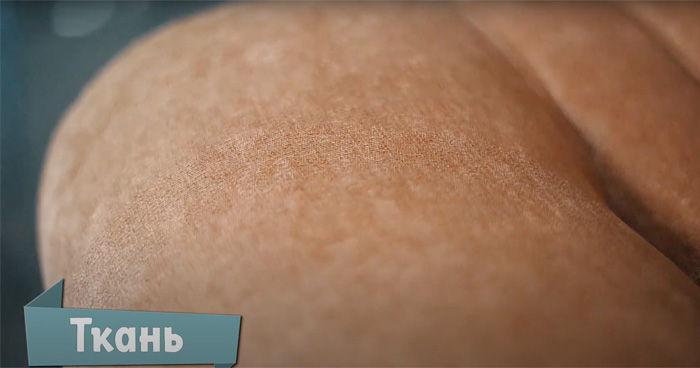Ткань. Имеет много общего с креслами из экокожи, но при этом материал более приятный для тела.
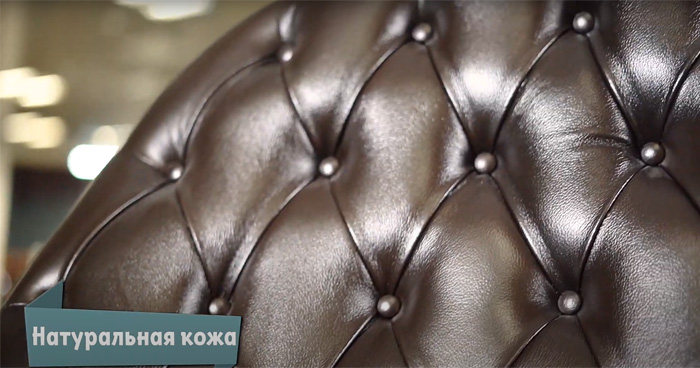
Более износостойкий и долговечный. Из минусов — не советуем что-то проливать и сидеть в грязной
одежде.
Уход. Избегайте контакта ткани с острыми и режущими предметами, трения со стеной и другими
поверхностями. Пятна или другую грязь на текстильной обивке удаляйте влажной тканью с раствором для
чистки. Используйте минимальное количество чистящего средства — излишняя влага приводит к
образованию разводов.Натуральная кожа. Отличается особой прочностью, гибкостью и долговечностью. Не поддаётся износу и
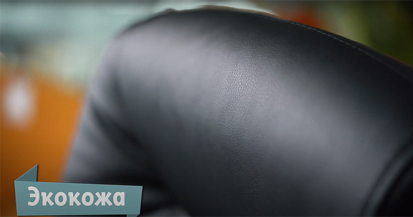
загрязнениям. Материал выглядит презентабельно и демонстрирует статус владельца. Зачастую кресла из
натуральной кожи — это дорого, но есть и исключения.
Уход. Оградите материал от длительного воздействия прямых солнечных лучей. Протирайте компьютерное
кресло влажной мягкой тканью или замшей.Экокожа. Материал воспроизводит текстуру натуральной кожи. Недорогой, внешне солидный, но, к
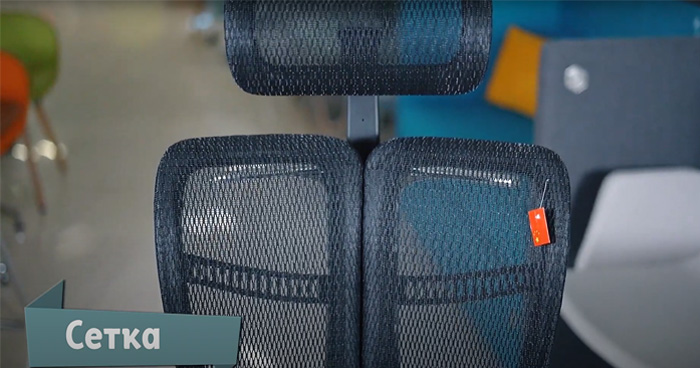
сожалению, не самый прочный материал. И не самый приятный для тела. Подойдет для тех, кто не
проводит много времени за рабочим местом и хочет максимум солидности, при этом не переплачивая.
Уход. Не прикасайтесь горячими предметами к материалу. Вытирайте кресло влажной мягкой тканью или
замшей. Учитывайте, что чрезмерное количество пота приводит к порче материала.Сетка. Самый продвинутый материал. Чаще используется в ортопедических и эргономичных креслах. Имеет
максимум эксплуатационных преимуществ: прочность, теплопроводность, адаптация под форму тела.
Зачастую кресла с сеткой выглядят футуристично и не вписываются в классические интерьеры. Как раз
из сетки производят самое знаменитое компьютерное кресло в мире Herman Miller.
Уход. Избегайте контакта сетки с острыми и режущими предметами. Не ставьте кресло в месте с
повышенной влажностью и возле мощных нагревательных приборов. Протирайте ткань влажной тряпкой по
мере необходимости. -
Механизм. Какие задачи должно решать кресло
Чтобы подобрать правильный механизм, опирайтесь на индивидуальные задачи. От этого выбора зависит
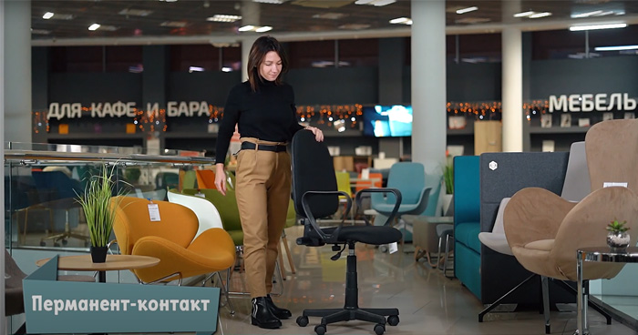
ваша производительность и долговечность кресла. Выделим 5 основных видов.Перманент-контакт. Недолговечный и нефункциональный механизм. Имеет только регулятор высоты
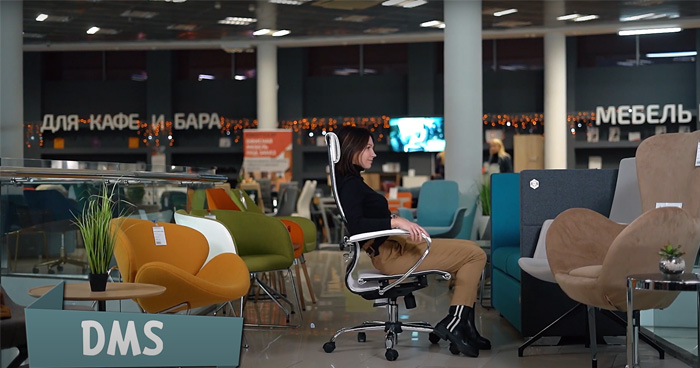
подъёма и используется в самых недорогих креслах.DMS. Самый распространённый механизм, который используется в креслах операторов, дорогих креслах
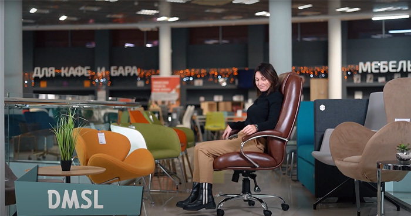
руководителя и креслах для детей. Он имеет встроенную функцию качания и регулятор жёсткости
качания. Фиксируется только в рабочем положении. DMS не отличается большим запасом прочности и не
рекомендуется для людей больше 100 кг.DMSL. Усовершенствованная версия DMS. Позволяет фиксировать угол наклона кресла в любом положении.
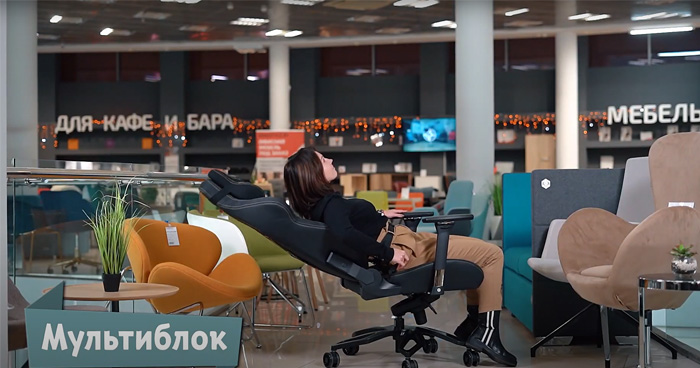
Отличается более серьёзным запасом прочности. Из минусов: небольшая амплитуда качания, особенно с
размером 20×20 см.Мультиблок. Самый серьёзный механизм у классических кресел. Прочный и функциональный. Фиксация угла
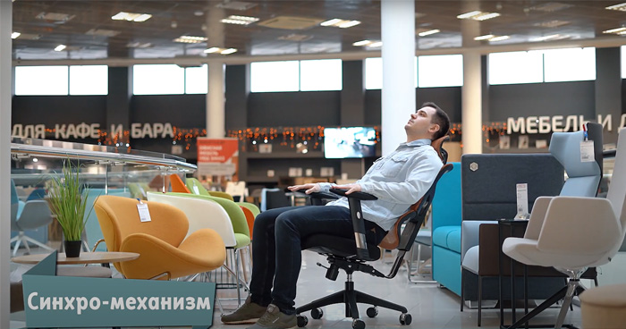
наклона в 4 положениях. Но не самый дешевый — кресла с ним достаточно дорогие.Синхро-механизм. Это механизм, который используется в эргономичных креслах. Тут всё уже гораздо
интереснее. Пропорция отклонения сидения по отношению к спинке в таких креслах, как правило, 1:3,
что обеспечивает постоянную опору ногам, без передавливания сосудов. Когда спинка находится в
наклоне, механизм имеет только плюсы и рекомендуется для тех, кто находится за компьютером больше 5
часов. -
Антропометрия. Как подобрать компьютерное кресло по росту и весу
Многие кресла универсальны — подходят для людей разных по росту и весу. Однако набирают
популярность индивидуальные модели, разработанные специально для высоких людей или низких, для
большой нагрузки и наоборот. Поэтому наш совет — обязательно проверяйте в характеристиках кресла
данные показатели. Это залог удобства, здоровья и продуктивности.
У нас на сайте вы можете отфильтровать кресла для людей:А также кресла, выдерживающие нагрузку:
-
Дополнительные комплектующие. Как можно улучшить кресло
Колёсики. Выбирайте в зависимости от того, на какой поверхности будет стоять кресло. Пластиковые
ролики подходят для ковровых покрытий. Полиуретановые не царапают ламинат и паркет. Глайдеры
позволяют зафиксировать кресло в одном положении, если колёсики не нужны.
Крестовины. Исходите из ваших ожиданий. Пластиковые крестовины выдерживают большой вес и
интенсивное использование. Стальные и алюминиевые модели отличаются повышенной прочностью,
долговечностью и презентабельным внешним видом.
2 способа выбрать кресло
Онлайн
На нашем сайте представлено 2015 разных видов кресел. Мы разделили кресла на категории, в зависимости
от
роста, веса, цены, назначения, бренда, материала и цвета. Чтобы было удобно выбирать и ориентироваться
по
ценам подходящих вам кресел. Наши менеджеры проконсультируют в онлайн чате или по телефонам.
В фирменных салонах
Лучший способ правильно выбрать офисное кресло — посидеть в нём. У нас вы сможете увидеть
множество
моделей вживую и примерить их.Консультанты всегда готовы помочь советом, исходя из многолетнего
опыта
работы. Будем рады вас видеть. Поверьте, мы найдём вам то самое кресло.